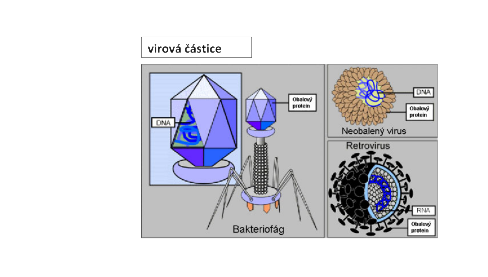
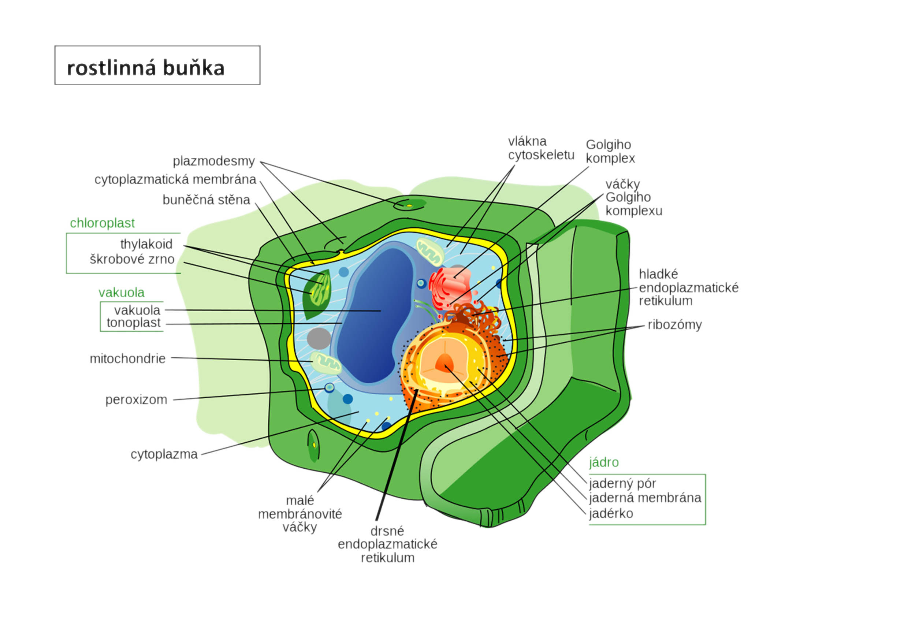
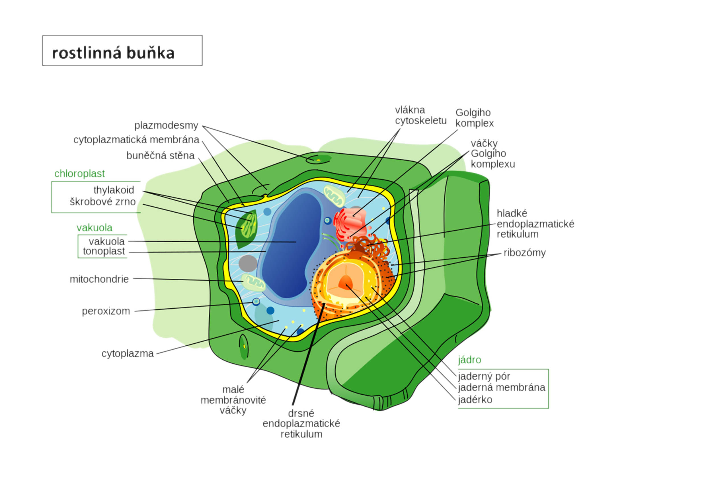
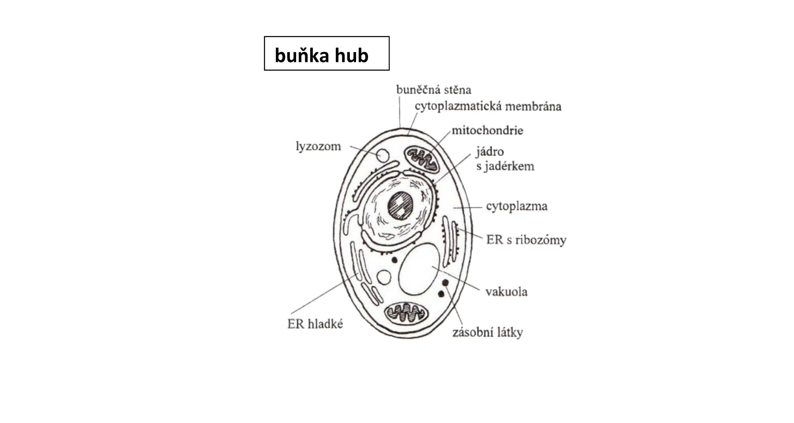

Nebuněčné organismy – viry
Jednotlivá částice viru schopná infikovat buňku se nazývá virion. Viriony jsou tělíska různého tvaru. Každý je složen z nukleové kyseliny a bílkovinného obalu – kapsidy. Složitější obalené viry mají i další obaly, tvořené bílkovinami a fosfolipidy. Komplex nukleové kyseliny a kapsidy se nazývá nukleokapsid.
Nukleová kyselina nese genetickou informaci viru. Je tvořena obvykle jednou molekulou nukleové kyseliny (DNA nebo RNA). Některé viry mají genom tvořený více molekulami nukleové kyseliny, např. virus chřipky má 8 segmentů RNA.
Kapsida chrání nukleovou kyselinu a zprostředkuje vazbu na hostitelskou buňku. Struktura je často geometricky pravidelná. Kapsida je složena z bílkovinných podjednotek kapsomer.
Virové bílkoviny jsou vždy specifické a mají schopnost aktivovat imunitní systém hostitele, aby začal tvořit protilátky.
Tvar virionu může být kulovitý, tyčinkovitý nebo vláknitý, mohou z nich vyčnívat hroty nebo výběžky. Bakteriofág (virus bakterií) má komplexní – složenou strukturu virionu, virus tabákové mozaiky je neobalený virus, retrovirus je obalený virus.
Buněčné organismy
Historie výzkumu buněk
- 1837 – J.E. Purkyně
- pouze základ buněčné teorie
- domníval se, že buňky mohou vznikat de novo = sami od sebe (dnes víme, není úplně pravda)
- 1838-39 – Matthias Schleiden a Theodor Schwann
- Schleiden – botanik – rostlinné buňky
- Schwann - zoolog - živočišné buňky
- Dohromady vytvořili buněčnou teorii
- 1857- Rudolf Virchow
- potvrdil teorii
- přidal poslední důležitý bod: omnis cellua e cellua (každá buňka pouze z buňky)
- každá buňka může vzniknout pouze z buňky, nemůže se tedy stát jak tvrdil Purkyně, že buňka vznikne sama od sebe bez nějaké předchozí buňky
Buněčná teorie

- buňka je základní stavební a funkční jednotkou živého organismu
- všechny organismy jsou jí tvořeny nebo v ní žijí – máme jednobuněčné, mnohobuněčné organismy, také viry, které jsou nebuněčné organismy a mohou žít v buňkách, díky nimž se mohou rozmnožovat
- všechny buňky mají obdobné chemické složení a probíhají v nich podobné reakce, také mají podobnou strukturu
- nové buňky vznikají pouze z buňky mateřské
- činnost organismu je výsledkem činnosti buněk a jejich interakcí mezi buňkami
Prokaryotické buňky
Nachází se v jednobuněčných organismech, jako jsou bakterie a archea.
Jádro je volně přítomné v cytoplazmě.
Eukaryotická buňka
Je evolučně mladší, složitější a zpravidla větší než buňka prokaryotická. Jsou dva způsoby dělení těchto buněk – mitózou a meiózou
Rozdělujeme tři typy eukaryotických buněk: rostlinná, živočišná, houbová. Základní rozdíl ve stavbě mezi buňkou rostlin a živočichů je ten, že živočišná nemá buněčnou stěnu. Buňka hub se z hlediska stavby v zásadě shoduje s rostlinou. Srovnánní těchto typů buněk je v tabulce níže.
Srovnání přítomnosti buněčných struktur eukaryotických a prokaryotických buněk
| Eukaryotické buňky | Prokaryotická buňka | |||
|---|---|---|---|---|
| Buněčná struktura | Rostlinná buňka | Živočišná buňka | Buňka hub | Bakterie |
| Buněčná stěna | Ano | Ne | Ano | Ano |
| Cytoplazmatická membrána | Ano | Ano | Ano | Ano |
| Cytoplazma | Ano | Ano | Ano | Ano |
| Cytoskelet („kostra") | Ano | Ano | Ano | Ne (většinou) |
| Jádro | Ano | Ano | Ano | Rozpuštěnná forma jádra (genetický materiál) |
| Jadérko | Ano | Ano | Ano | Ne |
| ER (endoplazmatické retikulum) | Ano | Ano | Ano | Ne |
| GA (Golgiho aparát) | Ano | Ano | Ano | Ne |
| Vakuoly (ohraničení nějaké látky) | Ano | Ne (vzácné) | Ano | Ne |
| Mitochondrie (energie) | Ano | Ano | Ano | Energetické reakce probíhájí na plazmatické membráně |
| Ribozomy | Ano | Ano | Ano | Ano |
| Plastidy (barviva,tuky....) | Ano | Ne | Ano (různé transformace, ale ne jako u rostlin) | Ne |
| Lyzozómy | Ne | Ano | Ano | Ne |
| Centriola | Ne | Ano | Ne (pouze někdy) | Ne |
| Plasmodesmy | Ano | Ne | Ne | Ne |
Rostlinná buňka
 

Živočišná buňka

Buňka hub
